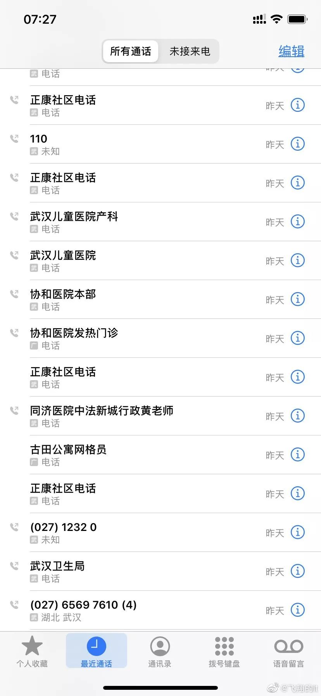

他感染了，可仍在网上给患者看病
原文链接 备份链接 2月1日，西藏自治区第三人民医院医生土旦朗杰观看病人胸片。目前，西藏唯一一例确诊的新型冠状病毒感染的肺炎患者在此住院治疗。觉果/摄 新华社CNML图片 作者 杨海 编辑 从玉华 李亮是武汉某三甲医院的病房主任，从1月 …

根据公开数据，武汉一年新生人口大约有12至13万。这意味着目前受疫情影响的即将生育的孕妇至少有一万人。武汉封城之后，交通不便，医疗资源骤然紧张，孕检、用药和生产成为孕妇必须面对的难题。接待孕产妇的四家指定医院难以满足发热产妇的诊治需求，对于有疑似新冠症状的孕妇而言，情况无疑雪上加霜。面对困难，即将生产的准妈妈们正在全力保全自己与胎儿的生命安全。
···············
❶
***“有种即将家破人亡的感觉”***
武汉市中心医院后湖院区门口，中年男人李树杰精疲力尽地打着车。这是1月29日晚，天气阴冷。他怀孕38周的妻子坐在编织袋上，理论上随时有可能生产。刘芳芳已经发了一整天的烧，温度在37.4-37.8度之间徘徊，她同时畏寒、浑身乏力、嗜睡，胎动明显减少。
不远处的发热门诊内，候诊的大部分是老年人。一位老人和医务人员起了摩擦。老人反复说，我是经人介绍来这做确诊的，护士就一直强调，我们这里没办法做核酸检测。在门诊等待几个小时后，医护人员告诉李树杰夫妇，这家医院还在改建，目前没有床位，无法接收孕妇。
暮色四合。同样无果而返的老人也准备离开。妻子在冷风里头吹了四十分钟，李树杰还是没能打到车。看着妻子一脸倦色，回忆起过去一周经历的一切，李树杰说：“有种即将家破人亡的感觉。”
在武汉市新冠肺炎防控指挥部于1月28日下达的红头文件里，曾明确了新型肺炎感染的确诊及疑似病例“伴有慢性肾功能衰竭病人、孕产妇、外科疾病的特殊病人由指定的发热定点医院负责收治”。名单列有：同济医院中法新城院区、协和医院西院、人民医院东院区及中心医院后湖院区。
李树杰不明白，这里不是政府公示的定点医院吗？为什么不能接收发热孕妇呢？

李树杰的通话记录
志愿者团队也在帮助这对夫妇。他们一轮轮地打电话。四家指定医院中只有一家表示可以接收，“但没有床位了”。1月31日凌晨夜间，刘芳芳开始浑身发抖，揣着热水袋才感觉好些。咳嗽不断的李树杰还在打电话求助。
几天前，李树杰和母亲都被诊断为病毒性肺炎。没能做到核酸检测，无法确诊，也无法入院。家里只有两个房间，为了隔离开来，刘芳芳带着两岁的女儿睡，李树杰的母亲一间房，李树杰和父亲则睡在客厅里头。为了不传染父亲，李树杰睡觉时都戴着口罩。不久后，两人的症状越来越多，李树杰开始怕冷、食欲不振，“晚上睡觉的时候嘴里很苦”。而妻子刘芳芳也开始鼻塞，流涕，咳嗽。
白天，他们把两岁的女儿锁在房间里面，与大人隔离开。“女儿感觉家里的气氛很不一样”，李树杰拖着哑了的嗓子，“她会哭，没有理由地哭。”他沉默了一会儿，擤了擤鼻涕，带着浓重的哭腔说，她比平时爱哭了，爱哭很多。
海豚在最近几天连续帮助了两名发热的疑似感染孕妇，两人现已确诊。在援助过程中，她发现政府指定的四家指定医院实际并不具备为发热孕妇接产的条件（没有符合条件的隔离产护病房）。此外，孕妇的抵抗力很弱，她们难以支撑去人满为患的十家定点医院做核酸监测，因此难以确诊。
她给湖北省妇联主席发去短信，指出目前有三个亟待解决的问题：为发热、疑似、感染孕妇提供用车；开辟优先通道给发热、疑似孕妇做核酸检测；指定并落实能够为发热疑似、感染孕妇做产检和接生的医院。
对方很快回复道，“这类问题会让市指挥部统一研究、处理。”
❷
***医院太缺人了，我不能请假***
“武汉留守孕妈群”内有200多名孕妇，其中孕期超过35周的就有50名。海豚每天在群内回复上百条信息。各种状况都有：需要保胎的高危孕妇断药了，可能早产的，寻麻疹发作的。许多孕妇建档在综合医院，由于疫情发生，许多医院成为定点医院，无法进行产检了。孕妇们的情绪恐慌，群内有各地区的产妇科医护提供咨询，也有社工和心理干预安抚情绪。
普通孕妇相对容易找到医院接产，发热孕妇则很难找到医院接收。一名发热孕妇的操作流程应该是：先做血检与CT，如果CT片显示肺部感染，下一步做核酸检测，确诊了才能联系医院。“但现在问题是没有试剂盒。”海豚说，不能确诊就是疑似病人，“定点医院敢收一个疑似病人去感染病房吗？普通医院敢收一个发热病人到普通病房吗？都不对吧，路堵死了！“
据GQ报道多方询问了解，某三甲医院在最近一段时间内接连收治了数名确诊感染或疑似的孕妇。但该医院并不在疾控指挥部指定接产的名单之列。“他们是冲着人道主义精神，医护人员冒着很大的风险为产妇接生。”知情人员表示，“但文件下达后，他们也不收孕妇了。”
另一家名单指定的医院则感到茫然，“（该医院）医生说他们甚至都没有开产科，他们自己都很不理解为什么会把他们医院作为定点医院。”
为感染孕妇接产是件“非常危险的事”。生产过程中的大量羊水、体液携带病毒，除非有防护服，否则会浸透医护人员的普通手术服，感染风险很大。
“孕妇和家属没法理解医护人员的为难，他们只能对医院充满怨气。”海豚说，但她理解，医院也不容易。“许多医院都没有防护服”。一回，志愿者给医院打电话，电话那头护士对她说，“全科室都污染了”。志愿者说，辛苦了。护士哭了，志愿者也跟着哭。
通常，医院都会用非常抱歉的语气拒绝海豚，“真的抱歉，我们现在真的没法接，来了也做不了手术，会耽误她们。”
怀孕五个月的小溪还在轮值24小时的值班。她是武汉市内一家医院的医生，科室里三人的小组只剩下她一个了。有的同事被抽调去支援发热门诊，有的已经感染。领不到N95，小溪四天才能换一次口罩，护目镜和防护服只能用酒精擦拭后重复使用。防护服穿着不透气，小溪常闷出一生汗来。口罩也让她觉得闷，吸氧不够，肚子里的孩子动得厉害。
好友萨莉向我们转述了这个故事。这是小溪怀上的第二个孩子。上一次因为感染流感滑了胎。好不容易才再次怀孕。12月做产检时，医生告诉她，胎盘低置，有流产的风险。医生让小溪不可久站，不可劳累，不可情绪过度紧张——但现在，小溪的工作时长增加不少，需要独自照顾病人、巡查病房，压力大得“天天都会大哭一场”。
出于某种压力，小溪在最后关头拒绝了我们的采访。好友萨莉劝她保重身体，赶紧请假休养。小溪内心挣扎，还是拒绝了，“医院太缺人了。我不能请假，对不起我的同事们。”
❸
*********一身两命，不得不有的“玻璃心”*********
由于武汉市内的综合医院几乎都投入了疫情工作，孕妇们大多停止了孕检、产检。许多孕妇被困在家里，只能“凭感觉”去判断宝宝的健康。每天吃完饭以后，她们会放轻音乐，数自己的胎动。武汉市内的焦急情绪在雌激素激增的孕期更加放大了。
怀孕19周的杜杜每天不断周转在新闻平台和科普网站。她担心，如果自己没有出现感染症状，身体是否也可能存在病毒，会不会传给胎儿？如果自己感染了，怎么去医院？照CT对早期胎儿有害，用药也会伤害孩子……尽管距离生产还有五个多月，下一次产检排在一个月后，但她克服不了自己的焦虑情绪。
几天前她察觉到了肚痛。从孕期开始，她就去私立医院产检，有自己的主管医生。但这个时候，她联系不上自己的主治医师了。武汉封了城，公共交通停运，没有私家车，只能去社区找车。疫情爆发之后，社区电话便再也打不通了。 她每天要用上十几次抑菌洗手液，结果手上起了红疹，脱皮，痒。
“孕妇过度紧张，情绪过于激动，都会导致体内催产素分泌增加，进而引起腹痛，甚至流产。“武汉都市妇产医院主治医师袁昌玲对GQ报道说。由于公立医院妇产科门诊的停诊，不再接收孕产妇，使得武汉几家还在营业的私立医院突然爆满。私立医院相对宽松，只要孕妇体温正常，没有特殊疾病，一般都可接收。只是花费高昂，普遍要比公立医院贵上至少四分之一。但对许多人来说，花费问题在此刻显得不再重要。
某种程度上，相较孕早期和孕晚期，孕中期要承担的心理风险或许更大。“27到30周，胎儿已经成形，这时一旦出了问题，只能做引产。很危险。”海豚说。
每天对接一二十名孕妇，袁昌玲笑称自己不做医生时“都在做线上心理咨询师”。起初她打字回复，后来打不过来，改发语音，最焦虑的一个孕妇每天给她发上百条信息。崩溃大哭是常事。耐心的她都能理解，她们身上有两条生命，“孕妇都有颗玻璃心”。
25岁的何文娟便时常会胡思乱想。丈夫周强在一家医院的影像科工作，专门负责拍CT。就在钟南山院士对外公布新冠肺炎存在人传人现象的前后时期，周强的工作量猛增。本来一天只用拍100个左右的片子，到了年末，反而要拍上300多个。医院的排班也大改，每个人要多上一天班，还加了夜班。
工作时的周强穿着防护服，中途不能脱下来，不能看手机，也很少回信息。宫缩不断时，何文娟心慌意乱，也没能与丈夫获得联系。此前周强告诉妻子，一般凌晨三四点以后病人才会少起来。曾有一次，周强在凌晨四点回复了信息，两人通话了20秒。周强说，你不要熬夜啊。确认了妻子平安以后，他便挂断电话，重新回到了岗位上。
何文娟体谅丈夫辛苦，更担心他的安全。可对孕妇来说，理智无法战胜失落的情绪。以前丈夫去上班前，总是会亲她一下，现在，两人只是简单地拉一下手。往日周强下班了，会在第一时间嘘寒问暖，逗她开心，同她玩笑。现在，周强回家的第一件事情是洗澡、消毒。丈夫还会刻意地与她保持距离，“除非是我强烈要求他在我旁边，他都不愿意待在我旁边。” 有的时候，何文娟还会被丈夫“赶”出来。夫妻二人在一间房子里，有时只能用微信聊天。
晚上，很多时候周强执意要和妻子分房睡。这让何文娟格外地不安，“他不在我身边，我就不踏实，就会宫缩地很频繁。”为此，何文娟哭了好几次，有时胡思乱想起来，还会想“他是不是不喜欢我了”。
周强终于吐露真情，科里面早就有医生感染了，加上感染了可能也没有症状，不怕一万，就怕万一，“我不想传染给你”。心疼又委屈的何文娟眼睛泪汪汪的，执拗地要和丈夫睡在一起。那一晚，夫妻二人同床而眠，但周强始终背对着他深爱的妻子。
❹
***“看宝宝能坚持多久”***
小猫半卧在床上，用被子垫高了背部，努力在肚脐周围找到了一处没有青紫的地方扎进针头，把一针管低分子肝素缓缓注入皮下。这是孕妇可以使用的少数药物，没有替代品。注射刺破的血管，连成一片青紫色。

这是35岁的她怀孕的第21周，肚子已经高高隆起，宣示着新生命即将到来。但肚皮上密密麻麻的青紫瘢痕，透露着这位母亲的不易。
上次怀孕是在一年多前，宝宝的心脏在27周时突然停止了跳动。“没有任何感觉“，起初小猫没有发现，直到她意识到胎儿很久没有动了。她去医院检查，医生告诉她孩子“已经没有了”。
当时她不知道自己患有非典型的抗磷脂综合症，这种病不怀孕则已，一怀孕就会捣乱孕妇的凝血系统，让血液处于高度凝固的状态，在胎盘和脐带上长出细小血栓，阻碍了营养的运输，引起胎儿危险。
走出引产的阴霾不是一件容易的事，小猫说，她其实“一直都没有走出这个忧伤”，直到再次怀孕之后才好一点，“经历过的人都知道，这种痛苦真是很难走出来的”。
所以这次怀孕，小猫格外小心，辞去了工作，安心在家卧床保胎。到现在，本来应该是比较平稳的21周了，除了每天注射，还需口服两片阿司匹林、一片优甲乐、一颗叶酸、一袋冲剂。
但一场突如其来的瘟疫打断了这个进程。就像是还剩最后几个关卡就能把游戏打通关，突然被切断了电路，电脑配置再高、游戏装备再好也没辙。
她已经很久没睡一个好觉了。在微博上看到一个求助的产妇，她失眠到凌晨两点。“我真的很希望有医院能接收她，为她治疗。每天我的心都是悬着的。”
物伤其类。小猫自己与宝宝的命运也处于未知。她已经很久没做孕检了。常去的省妇幼医院门诊已经停诊，急诊又挂不到号。网上流出消息：省妇幼开始接收发热的病人，也出现了疑似感染的案例——她更不敢去了。
挂不上急诊号就拿不到医生的处方，没有处方就拿不到药。手里的针剂只够撑个十天。十天之后情况会是什么样，谁也说不好。
这是一月的最后一天，也是武汉封城的第九天。小猫逼迫自己喝了一大碗鸡汤，打了针吃了药，早早睡下。为了早点睡着，她特意“少看那些负面的新闻”。
但还是睡不着。
在“留守武汉孕妈群”里，保胎孕妇们都在偷偷减少着药量：原本一天两针的改为一天一针，原本两天一针的就改为三天一针，掐着药量度日。减少药量并没有给身体带来明显的感觉，但这并不意味着没有危险。低分子肝素是孕期重要的药物，自行减少不排除会影响胎儿，甚至可能造成流产等不良妊娠结局。
小猫自己也知道后果，但没得选择。“如果说减少这个用量的话，血液又会产生一个高度凝固的一个状态，然后身体里面的一些免疫系统可能会攻击胚胎。然后或者说产生在胎盘上面产生一些细小的血栓，这是很危险的。”
可现在只能听天由命了，她说，“看宝宝能坚持多久，够不够坚强，能不能扛过去。”
❺
***新生命的呼喊***
“我不知道能不能熬到生的那一天。“小猫在家里痛哭过好几次，“一方面为我的城市，一方面为我自己，为肚子里面的孩子。不知道后面的路到底该怎么走。”
“虽然我现在这么说很悲观，但现在在这座城里的人，特别是像我这样高危的人，真的总是忍不住去想，我们最终的结果会是什么样？”小猫偷偷写好了遗书，给朋友发了一份。
在这座孤城中，一群有同样境遇、同样感受的孕妈们通过网络聚集在一起，从彼此的支持中获得安慰。小猫在好几个高危保胎孕妇的群里，“她们中很多人胎停好多次了，有的人到五十岁还在努力，还有做了好多次试管移植的……怎么会这么难呢？”
群里的成员都互称为“姐妹”。在门诊几乎停摆、交通切断、药也越来越难得到的情况下，“姐妹”们一起商量着对策。小猫曾把十分珍贵的针剂匀给一位“姐妹”，对方出现了胎停，“她要的很急，就直接坐地铁到我家门口，都没出站，我隔着栏杆把针递给她。”失去孩子的痛苦她经历过，不能让“姐妹”再遭受一次。
出于协力抗击疫情及防止进一步感染的考虑，武汉不少医院关闭了其他的科室，除了孕妇，很多其他病患也没法得到像往常一样及时的治疗。小猫把自己的处境称为“小困难”：“可能政府、国家已经没有办法考虑的那么全面了，在抗击疫情的时候，不可能把我们的小困难每一个都解决得很好。”
但她又有些矛盾，作为一名准妈妈，她也渴望政策的倾斜，国家能多照顾她们这个特殊群体一些。
海豚这些天哭了好几场。不是累，“是为了混乱而悲伤”。一直从事危机干预和心理救助的她对死亡并不陌生，但真的眼见一整个家庭被感染，在死亡边缘徘徊，她还是“控制不住”，“好像目睹着家破人亡”。每个人都对她说，“我只想要活命”，这个时候，心理疏导不起作用了。
“你问他（求助者）现在状况还好吗？不好！你能感受到他满心的愤怒、委屈、焦虑和绝望。告诉他某个信息可能有用。家属就会问，‘我们去了就能住上吗？住不上吧？还是别去了吧。我们去了还能回来吗？’甚至直接放弃：没有人会管我们的。”
海豚和志愿者们一起整理名单、发布求助信息，疏通一切关系，竭力做着一切“希望解决问题”的努力，但自己也不时陷入悲伤。“我真的会有一种埃博拉来了的感觉。会担心武汉会不会变成一座空城。”
2月的第一天，她帮助的一名确诊孕妇顺产诞下了一个男孩。胖小子7斤。在护士长的联络下，孩子被送往儿童医院的新生儿科，避免感染，不得不暂时和正在隔离的父母分开。海豚在朋友圈发下婴儿咿呀大哭的视频。感到重获了一点力量。
“来。”她写下，“聆听新生命的呼喊。”
GQ报道正在征集疫情防治的相关采访信息，如果您身处疫区、受到疫情影响，或是了解对疫情防治有促进作用的各类信息，欢迎随时与我们联系！
无论您是医护人员、患者及家属、疑似患者、物资供应方、运输方、志愿者、疫区服务业人员、了解疫情知识的专业人士……我们随时准备听到您的声音！
您可以在本文评论区、公众号后台留言，或发送邮件至gqreport@163.com 留下您的联系方式和您能够提供的信息摘要，我们会第一时间与您取得联系。
让我们一起努力，共渡难关！

在公众号后台回复彩蛋，送你一个彩蛋
采访、撰文：张佳婧、葛书润、戴敏洁、陈茹冰
编辑：卫诗婕
运营编辑：肖呱呱


原文链接 备份链接 2月1日，西藏自治区第三人民医院医生土旦朗杰观看病人胸片。目前，西藏唯一一例确诊的新型冠状病毒感染的肺炎患者在此住院治疗。觉果/摄 新华社CNML图片 作者 杨海 编辑 从玉华 李亮是武汉某三甲医院的病房主任，从1月 …
原文链接 备份链接 ********** *****那天夜里，从晚上七点，至次日上午八点，她连续接诊200余位输液留观的病人，装备只有一次性外科口罩、帽子、白大褂和手套。**********接诊区患者爆满，病房里床位紧张，设备缺少、防护不 …
原文链接 备份链接 ********** *****现在如果能多一点N95口罩、给我们医院捐赠一些无创呼吸机，就更加好了。***** 身穿防护服的蔡毅。受访者供图 文 | 新京报记者 周小琪 编辑｜陈晓舒 校对 | 杨许丽 ►本文 …
原文链接 备份链接 没有一个准确的数据，说明现在武汉有多少正在准备分娩的孕妇，但她们的生活被这场疫情彻底打乱了。 全文3588字，阅读约需7分钟 ▲2月1日，在入住武汉一家新型肺炎特殊病人定点医院的第二天，龚林顺产一个7.1斤男婴，母子 …
原文链接 备份链接 文/杜圆圆 编辑/单一 根据预测，新冠肺炎或将在一周后，迎来新的爆发期。从去年12月初被发现，到目前为止，疫情已经持续了两个月的时间。 从始至终，医护人员一直是最前线的逆行者。武汉这座刚崛起的新一线城市，成了全中国最惨 …